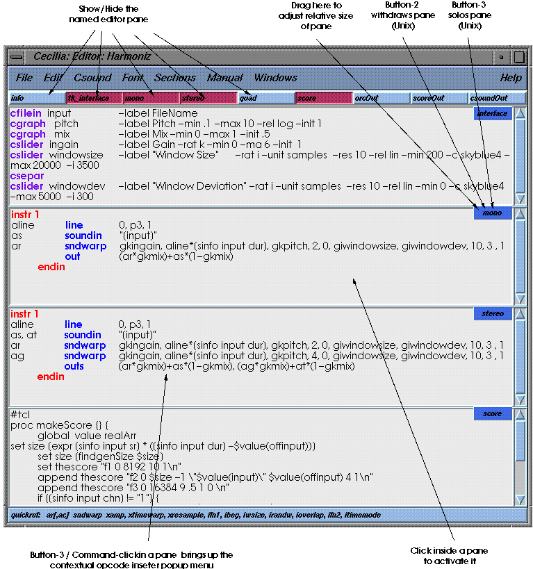
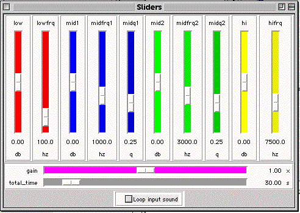

In 1994, it was becoming increasingly evident that the future of electroacoustic composition resided in the use of general-purpose computer workstations. The MIDI protocol and its limiting event descriptors had long been a hindrance to a sound-object approach to composition. The analog studio, in many ways, had been more conducive to experimentation with sound. By separating the control aspects of composition (midi scores) and sound generation (midi synths and samplers), a vital link was lost. It was becoming increasingly more difficult to control synthesisers that, ironically, could generate more and more complex sounds.
With the power of current computers, software synthesis and processing offered an attractive alternative. Csound, as the "grande dame" of such programs became, the basis for constructing a system where all processing functions of the traditional studio would be ported and offered to the composer in a digestible and intuitive form. Given Csound's terse command-line interface, this was easier said than done. The system had to be very responsive and not require that the composer be particularly knowledgeable in the theories and practices of audio-processing. In other words, the system had to accommodate the composer more than the computer-music programmer. Yet, as one grew into the use of more sophisticated techniques, the system also had to allow an elegant shift to a more complex relationship to the inner resources of Csound programming.
After the system had been in use for a period of time, it became evident that a practical and responsive interface was more than a help to the neophyte. Many, if not most, sound-processing tasks in electroacoustic music (particularly in musique concrete/acousmatic music) rely on a relatively well know subset of audio-processing techniques. In the end, it turned out that Cecilia's "preset" modules philosophy, covering the usual time-based and frequency-based audio processes, was contributing to explosive productivity for seasoned composers as much as the neophytes.
Our approach to Csound was as a serious music production tool. Furthermore, our use of the language was biased towards the production of sound-object oriented composition sometimes referred to as "musique concrete" where sound is, more often than not, obtained from previous recordings and submitted to complex chains of transformations and reorganised into final compositions in a fairly traditional multi-tracking and mixing environment. In a general sense, Cecilia can be thought of as a composition management system, bringing together under one roof the many programs needed to run a successful composition session. It proposes many tools of its own when needed but it tries to use tools that are already available to the various computer platforms used by composers.
In examining a typical work session with Csound, we have identified five important problem areas:
1- Many resources are needed: text editor, soundfile player, score generator, soundfile editor, etc. Each of these programs have to be managed. Files must be opened, processed, saved and closed and computations have to be launched. Time spent in these mundane tasks can easily up to more than 50% of a given session.
2- Music is a time-based form. All good electroacoustic music (specially sound-oriented composition) requires intimate control over sonic time profiles. Text is generally a poor descriptor of time-based functions. Csound offers precise control in the form of function tables but the representation is not intuitive and prone to guess-work leading to important productivity loss.
3- Interactivity is crucial to experimentation. Csound was designed initially as a "batch" program with few provisions for real-time interaction. The power of current computer technologies allows real-time processing but few tools are provided in Csound to make good use of it. Interaction is also the subject of issues raised in point 1. The "back-and-forth" loop of editing/hearing results must be streamlined for the quickest turn-around possible. For example, one key stroke should save changes, start Csound with correct settings, compute the samples and play the results.
4- Documentation and help when it is needed. Csound is too rich a language to memorize. Opening a manual and seeking general help is wasted time.
5- Score generation. The great weakness of Csound is score input. Complex notes lists are difficult and time-consuming to enter in text mode. While Cscore offers an interesting alternative, the writing of C programs is usually beyond the reach of most composers. For strictly sound-processing tasks, this problem is perhaps less of a hindrance because a score can then be specified as a simple scheduler for a process, but a more traditional score-oriented approach must rely on other programs (such as Common Music, Scot or even MIDI sequencers) to generate complex scores. Sometimes the generation of score fragments is as useful as controlling full compositions.
In designing the Cecilia interface, we wanted to address all the above issues offering within one environment both power and generality. Cecilia is meant for both the expert and the beginner. To the expert it should mean an easier and direct access to the power of Csound, to the beginner it should mean not even knowing that Csound is present.Cecilia should therefore have a "Production mode", where one works on sound with a given set of controls and a "Programming mode" where code is written for specific purposes. The program should also provide means to gracefully slide continuously between the two modes.
In "Production mode", Cecilia should be usable with little or no interaction with Csound proper. For example, should a composer wish to filter or "flange" a soundfile, Cecilia should provide a module that only requires input for the soundfile to process with a graphical and real-time interface to specify and "play in" all control variables.
In "Programming mode" , Cecilia's principal job should be to assist the programmer in designing orchestras quickly and efficiently. The system should therefore know about Csound, offer a very fast turn-around time for testing and provide instant documentation for opcodes.
In both modes, a file management system should be provided to save orchestras and scores as single documents while preserving the flexibility of using the same orchestra with different scores. Orchestras and scores should be recallable from menus and cascades. In designing an interface, it is easy to oversee small details where important productivity gains can be made. For example, a knowledgeable file browser can save a tremendous amount of work if it provides a means of listening, editing sounds and deleting files.
Designing Cecilia was a multi-step process, beginning with a suitable Csound editor, a file management system and a responsive help mechanism. Tcl/tk was chosen as the development language for a number of reasons:it is multi-platform, is relatively easy to learn, comes with a full set of interface objects and is fast enough for the purpose of responding to user-input.
Cecilia runs on Unix, Macintosh, Windows and Linux platforms.
Fig.
1
The Main Cecilia window is where all Csound computation options
and variables are chosen.
When one or more sound choosers are specified in the interface
declaration, they also appear here.
The toplevel window of Cecilia is where all Csound computation options are set. All settings are done under menu controls. Output file management tasks are also done here: Specifying output sound file name, choosing sampling rate and control rates.
A special module cascade allows the storage of any number of modules for instant recall. The standard Cecilia modules are stored here. A user cascade is also available for organisation of modules, orchestras and scores.
This window is also used to choose soundfile input for a given module/orchestra. When a file object is declared in the interface pane of the editor (see further), a selector appears here. Pushing the button brings up a file browser for selecting a soundfile. The file button is also useful for selecting sound-analysis data files.
In an effort the integrate all the tools needed in a working session, a number of utilities are directly available through menus. All sound analysis programs are available at this level with special graphical interfaces for choosing sounds and specifying parameters of the analysis. Launching auxiliary programs can also be done with the main window menus.
In any location where sound is likely to be present, such as the file selector, the output and input slots, Cecilia always offers buttons for playing or editing the target soundfile.

Fig.
2
The Cecilia editor is where orchestras, scores and interface objects
are entered.
The editor is a multi-pane window and is optimised for orchestra
and score development.
The editor is the centre of Cecilia even though it is not necessary to use it to make sounds. The Cecilia editor is a multi-pane window where orchestras, interface objects and scores are defined. The document it reads and writes is a called a module. Typically a module includes an orchestra and a score, an information section describing its functionalities, an interface definition for any object used by the orchestras and/or score. An orchestra can come in three flavours:mono, stereo or quad depending on the output desired. The editor is optimised for Csound editing:
• Opcode insertion - A hot-key brings up a panel containing all Csound opcodes. Selecting an opcode inserts it with default values at the cursor position.
• Error reporting - When an error is detected upon computation, the editor reports the error at the offending line in the text itself by selecting the offending syntax.
• Instant help - A hot-key with a selected opcode in the text opens the manual at the proper page for instant documentation.
• Special soundfile information commands - A number of special commands are offered for soundfile data gathering directly in the text. Thus, one can directly find the correct size of a file, its number of sample frames, sampling rate and number of channels.
• Computation hot-keys - While in the editor, a hot-key launches Csound computations with the current document for writing to sound file or listening directly through the converters. Computations are carried with the current contents of the editor hence it is unnecessary to save the document before computation.
• Opcode colorizing - Opcodes, comments and special commands can be colorized for easy parsing.
• Score handling - The editor discriminates between different types of scores with a leading keyword. For example, a score beginning with the keyword #min will automatically generate a score containing a single note whose duration will be equal to the longest input soundfile. See the "Handling scores" section for further examples.
To facilitate file management, Cecilia modules are saved as single text files that include interface, orchestra and score definitions. The document structure is entirely editable outside of Cecilia.
One of the obstacles to doing useful work with Csound is the description of time-variant functions. Such functions can, in some case, be described mathematically but in most cases, a form of visual representation is essential to make them useful. Real-time interaction is also a kind of function descriptor that is not supported by text. Cecilia solves these two problems with a set graphical tools that pass data to a module or orchestra via regular Csound global variables. To do so, Cecilia reserves the use of instrument numbers from 100 upwards.
Fig.
3
The Graphing tablet is used to enter functions with the mouse.
Functions are passed on to the orchestra via global variables.
A number of preset functions are offered.
On computation, graphs are translated into Csound gen functions
and are stored at the top of the score.
The Cecilia grapher is designed to provide easy entry of break-point functions. The composer can draw line segments on a two-dimension graph scaling values over a time specified for the duration of the score or by using the function directly in a table or an oscillator. A library of preset functions is provided with buttons and full parametric control:random, brownian, scatter and many periodic waveforms. Graphs can be cut, copied, pasted, compressed, expanded and shifted arbitrarily. Any number of graphs can be used in a module.
At compute time, Cecilia graph functions are compiled into the Csound score and read by their own automatically assigned instrument in the orchestra. All graphic functions are read in instrument no. 199 with oscil1i opcodes. When computation is launched, functions described in the grapher window are compiled into individual ftables and inserted in the score using a gen05 (exponential), gen07 (linear) or gen08 (spline) method with the desired function number. A note is inserted in the score with start-time 0 on i199 with a duration obtained from a Cecilia "total_time" slider or the duration of the longest input soundfile chosen with a Cecilia file input object. The values are passed on to the user orchestra via global variables bearing the same name as the source function with the "gk" prefix. All these assignments are done automatically and are not usually visible to the user.
The declaration for a graphing function is given in the interface window pane of the editor using the following syntax:
cec_graph name unit log|lin min_value max_value start_value Func#

Fig.
4
Real-time objects pass data to a running computation through console-driven
events.
Gestures on the sliders can be captured, saved and recalled through
the menu accompanying each slider.
Cecilia real-time objects provide real-time interaction with the orchestra by opening a pipe to the Csound computation and formatting console-driven events to update the value of their associated variable. Objects are arranged in their own window in the order they are declared in the interface pane of the editor. Sliders, pop-up menus and toggle switches are provided. Further to providing real-time interaction, each real-time object offers a menu by which gestures on individual objects can be recorded, saved, recalled and played back.
Real-time interaction is accomplished by using the Csound console-event mechanism. A movement on the slider will generate a formatted line-event piped to the current Csound process. At compile time, each slider used in the interface is assigned two unique instruments. One will simply read the piped in data from the Cecilia kernel and broadcast the current value to the orchestra through a global variable. The other instrument will handle the recording and playback of gestures on this specific object according to the function selected with its menu. No data is read in from an object if it is in playback mode.
Ranges and names of each object, along with orientation and increment are specified in the interface section of the Cecilia editor. Objects will appear in the order declared within the area reserved for their type. The following syntax is used:
cec_slider
name unit orient(v|h) inc min_value max_value default_val
cec_toggle name unit default_val
cec_popup name unit list_of_values
As stated earlier, Csound provides only rudimentary tools for generating and editing scores. For simple, or even complex sound processing functions, this may not be a major stumbling block since scores will often consist of a single note used to start a given process process.
For more score-oriented tasks, a number of score descriptor languages are available. Cscore and Scot are useful and come prepackaged in the Csound distribution, but the composer should be allowed, within the same environment to use any score generating program. This task is somewhat facilitated by the fact that all score-generating software will end up generating a note list that will be passed to Csound for computation. Hence, Cecilia offers an integrated environment where any program can be used. In its standard usage, Cecilia always generates temporary files for computation. It is therefore easy to configure Cecilia to call any program to generate the actual note list.
A keyword at the beginning of the score definition in the score pane of the editor defines the program to call for generating the note list and the syntax that is used in the statements that follow. In the absence of a keyword, the following score is taken to be a regular Csound note list that will be passed directly for computation. Note that any function definitions can precede the score syntax declaration. Also, any function definitions issuing from the Cecilia graphing tablet are automatically inserted at the beginning of the final note list.
Midifiles are automatically recognised when opened with the editor file browser and the proper flags and files are passed on to Csound at computation time.
In the Cecilia score editor, the following keywords can be used:
#min (minimum)
This call will generate a score consisting of a single event with a start time of 0 and a duration specified by either a value taken from a Cecilia slider specifically named "total_duration" or from the length in seconds of the longest input soundfile declared through a Cecilia filein object.
#Cscore
The statements following are taken to be a C program. The C compiler is called with the data to obtain the executable. The resulting program is then executed and the generated note list is passed on to a temporary score file that will be be compiled with the current orchestra.
#Cm
Launches the Lisp kernel with the text describing all algorithms following the keyword. A script is written and passed to Stella. The script loads the score file into Stella and a write command is executed within Stella to produce an Csound formatted note list. The Csound computation is then launched with the produced document. Note that, in the current implementation, Common Music is run in "batch" mode, meaning that much of the interaction normally available within the lisp kernel in a Common Music session is lost. Future versions will support full lisp interactivity.
#Tcl
The statements following are taken to be a tcl program. Any tcl program is executed within the Cecilia kernel and a note list is returned. It is up to the user to ensure proper output.
#Scot
The statements following are taken to be in Scot format. All necessary interface functions are pasted at the top of the file and the Csound computation is called with the -S flag.
#Cyb
The statements following are taken to be in Cybil format. Cybil is a score generating language that is a superset of tcl commands and built into the Cecilia kernel. Its main goal is to facilitate the generation of score fragments. The syntax is simple and meant to be easily memorised. Cybil owes some of its functionalities and syntax to Leland Smith's SCORE language and, to a lesser extent, to Common Music.
Cybil is a language built in tcl and is an integral part of the Cecilia environment. Scores are defined by listing commands on a per-parameter basis. A short example:
<Csound score header>
instr 1
p2 {sq .1 60s};
p3 {sq 2 60s}* {pa 2};
p4 {sq {ran i 100 900}60s};
p5 {lo f 40 90 60s};
e
would produce a score of 600 notes (0.1 sec for 60seconds) where the duration of each note would be 0.2 seconds (p2 * 2). The pitch (p4) of each note would be a random integer value between 100 and 900. The amplitude (p5) would rise logarithmically from 40 to 90.
1. A Cybil score starts with
the #cyb keyword.
2. The score proper starts at the first instrument definition
keyword:instr followed by the instrument number(s) it
applies to.
3. Each instrument definition ends with "e" on a separate
line.
4. A Cybil score can contain any number of instrument definitions.
5. Parameter data is entered on any number of lines terminated
by a ";" the first line being p2 the second p3, etc.
6. A parameter line can contain any number of Cybil commands.
7. A command consists of an algorithm optionally followed by
an operator and a function.
A Cybil command generates data over a given number of events or a given period of time, according to a specific algorithm. The general syntax is:
{algorithm duration}[ operator {function}]
Each algorithm is entered between the "{}" brackets. A space separates each successive command. The operator and function are an optional part of the command. If present the results of the command will be operated on by the given function. Duration can be specified in two ways: A single number indicates the command will be in function for a number of events. A single number followed immediately with a s indicates the command will be in function for a number of seconds.
sq {sq val1 val2 val3....dur(s)} ;
a data sequencer
li {li min max dur(s)} ; a linear progression
lo {lo min max du(s)} ; a logarithmic progression
ma {ma f/i min1 min2 max1 max2 dur(s)} ; a tendency mask
gr {gr name_of_graph dur(s)} ; a mapping from a Cecilia graph
function
A Cybil function generates one value each time it is called. Functions cannot be used to generate multiple pieces of data. To do this, they must be embedded into an algorithm. The Cybil functions are:
ran {ran f/i min max} ; random number
in floating point or integer
pik {pik val1 val2 val3 val3 ..} ; a random pick amongst a set
of values
pa {pa #} ; a time-stamped value from another parameter
co {co #} ; a constant
In most cases, any value in an algorithm can be replaced by a function. The sq algorithm can contain other algorithms as values such as other sequences. The level of nesting is arbitrary. One of the most interesting algorithm in Cybil is gr . This command allows the mapping of any current Cecilia graph onto any parameter. Values are mapped linearly over a given time period meaning that a given graph can be mapped in different time periods during the same score and over different parameters.
Cecilia's main mandate is to optimize the production of sound and music. As such, it has given access to the rich possibilities of Csound to many who would perhaps not have ventured into it. In the time it has been available since 1996, Cecilia has led to the creation of more than three dozen substantial electroacoustic pieces at the Université de Montreal, a majority of which were by young composers who had not yet learned Csound.
Perhaps the most significant contribution of this interface was to tame and manage complex work sessions with Csound and allowing very quick turnaround for experimentation.
Version 2.0 of Cecilia is already well under way and will feature an entirely new object-oriented interface with multiple orchestra and score editing along with a piano-roll type interface for composition.